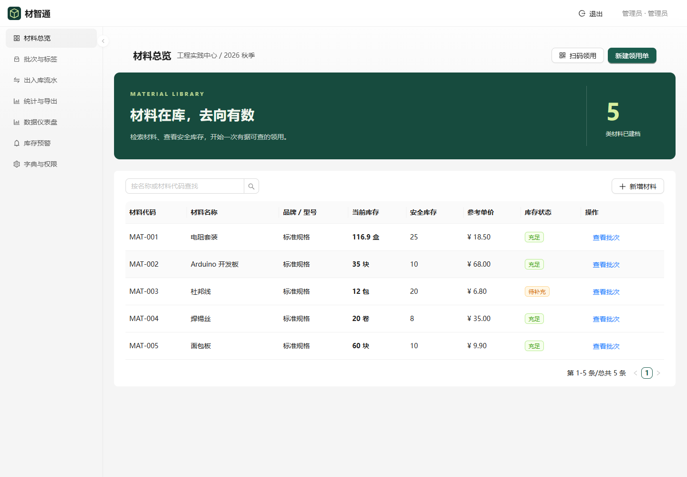
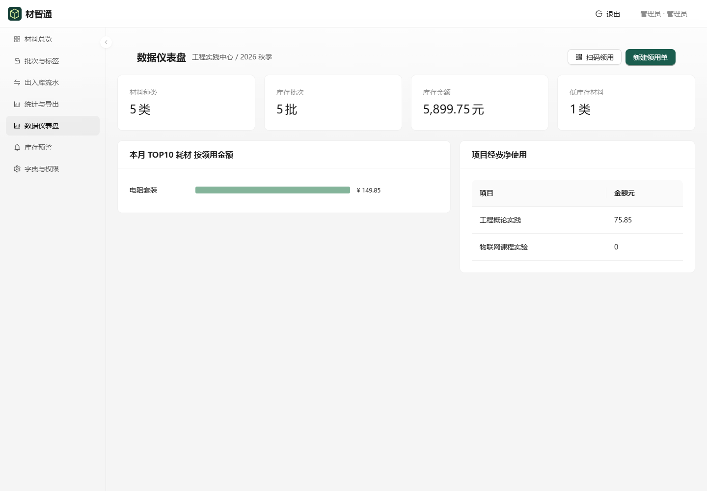

课程项目 / 2026.10
材智通 · 智慧材料库
为工程概论课程做的材料库管理项目，围绕“材料在哪、谁领用了、还有多少”组织业务流程。

做了什么
材料与库存
四级分类、批次二维码、入库、领用、部分归还、报废及低库存提醒。
统计与管理
Excel / PDF 报表、角色权限、审计记录，以及离线领用草稿。
实际验证到哪里
已有可运行的本地演示包。2026 年 10 月 24 日的开发验证记录列出 27 项后端自动化测试通过，前端生产构建完成，并检查了领用、部分归还、报表导出与离线草稿。
这里展示项目说明和真实截图。完整管理系统目前是本地演示，并未部署为本站可操作的后台。PostgreSQL 现场验证、真实附件服务及长期压力测试仍需继续完成。

这个项目留下的练习
把需求、界面、接口、数据库和验收条件放在一起看。课程实现借助 AI 协作完成，也为后续阅读代码、理解业务规则留下了一份完整样本。